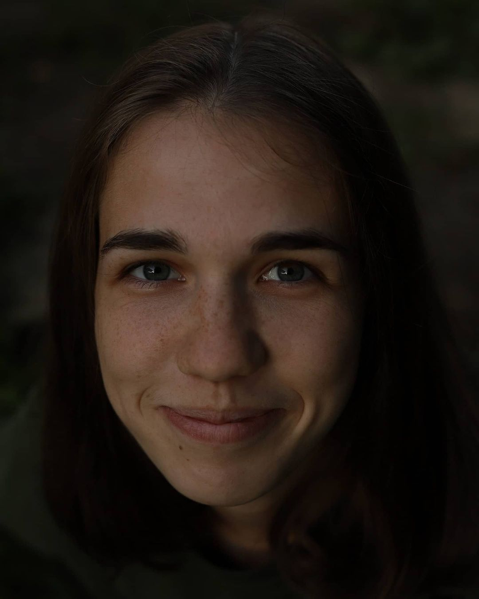

КОНТАКТЫ
Живая фотография с элементами необычной душевной постановки…
Привет, я Людмила Колчина и я занимаюсь
свадебной, семейной и портретной фотографией.Если говорить о свадебной фотографии, то я снимаю
только по-настоящему любящих людей… На данном сайте наглядно показано, как выглядит свадебная
фотография в моем понимании. Для меня важнейшими компонентами в съемке стали ваша любовь, настоящие
эмоции, искренне любящий взгляд, теплые объятия и нежные прикосновения. Я сделаю ваши фотографии
живыми и естественными, вам не придется становиться в нелепые позы…вы будете улыбаться и радоваться.
Теплая душевная атмосфера съемки останется на долго в вашей памяти. Если вам понравились мои работы
и вам интересно со мной познакомиться и пообщаться, то можете позвонить мне или написать)
